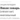
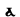

Лингвистика
{kind=link}
Лингви́стика (от лат. lingua — язык), языкозна́ние, языкове́дение — наука, изучающая языки.
Это наука о естественном человеческом языке вообще и обо всех языках мира как его индивидуализированных представителях.
В широком смысле слова, лингвистика подразделяется на научную и практическую. Чаще всего под лингвистикой подразумевается именно научная лингвистика. Является частью семиотики как науки о знаках.
Лингвистикой профессионально занимаются учёные-лингвисты.
Содержание
[скрыть]- 1 Предмет лингвистики
- 2 Разделы лингвистики
- 2.1 Теоретическая лингвистика
- 2.2 Прикладная лингвистика
- 2.3 Практическая лингвистика
- 2.4 Эмпирическая лингвистика
- 2.5 Одноязычная и сравнительная лингвистика
- 2.6 Внешняя и внутренняя лингвистика
- 2.7 Лингвистика языка и лингвистика речи
- 2.8 Статическая и динамическая лингвистика
- 2.9 Общая лингвистика
- 3 Лингвистика и смежные области знания
- 4 Лингвистическая терминология
- 5 История лингвистики
- 6 См. также
- 7 Литература
- 8 Ссылки
Предмет лингвистики[править | править вики-текст]
Лингвистика изучает не только существующие (существовавшие или возможные в будущем) языки, но и человеческий язык вообще. Язык не дан лингвисту в прямом наблюдении; непосредственно наблюдаемы лишь факты речи, или языковые явления, то есть речевые акты носителей живого языка вместе с их результатами (текстами) или языковой материал (ограниченное число письменных текстов на мёртвом языке, которым уже никто не пользуется в качестве основного средства общения).
Лингвистика в гносеологическом аспекте[править | править вики-текст]
Лингвистика включает наблюдение; регистрацию и описание фактов речи; выдвижение гипотез для объяснения этих фактов; формулировку гипотез в виде теорий и моделей, описывающих язык; их экспериментальную проверку и опровержение; прогнозирование речевого поведения. Объяснение фактов бывает внутренним (через языковые же факты), либо внешним (через факты физиологические, психологические, логические или социальные).
Субъект и объект лингвистики[править | править вики-текст]
Как дисциплина, имеющая ряд принципиальных черт гуманитарных наук, лингвистика не всегда отделяет субъект познания (то есть психику лингвиста) от объекта познания (то есть от изучаемого языка), особенно если лингвист изучает свой родной язык. Лингвистами часто становятся люди, совмещающие тонкую языковую интуицию (чутьё языка) с обострённой языковой рефлексией (способностью задумываться над своим языковым чутьём). Опора на рефлексию для получения языковых данных называется интроспекцией.
Разделы лингвистики[править | править вики-текст]
Лингвистика в широком смысле слова (познание языка и передача результатов этого познания другим людям) подразделяется:
- теоретическая лингвистика: научная, предполагающая построение лингвистических теорий;
- прикладная лингвистика: специализируется на решении практических задач, связанных с изучением языка, а также на практическом использовании лингвистической теории в других областях;
- практическая лингвистика: представляет собой ту сферу, где реально проводятся лингвистические эксперименты, имеющие целью верификацию положений теоретической лингвистики и проверку эффективности продуктов, создаваемых прикладной лингвистикой.
Теоретическая лингвистика[править | править вики-текст]
Теоретическая лингвистика исследует языковые законы и формулирует их как теории. Она бывает:
- эмпирической: описывающей реальную речь;
- нормативной: указывающей, как «надо» говорить и писать (прескриптивная, предписательная).
Можно говорить не только о «языках», но и о «Языке» вообще, поскольку языки мира имеют много общего. Поэтому выделяют:
- общую лингвистику: изучает общие (статистически преобладающие) черты всех языков как эмпирически (индуктивно), так и дедуктивно, исследуя общие тенденции функционирования языка, разрабатывая методы его анализа и давая определение лингвистических понятий. Частью общей лингвистики является лингвистическая типология, сопоставляющая разные языки безотносительно к степени их родства и делающая выводы о Языке вообще. Она выявляет и формулирует языковые универсалии, то есть гипотезы, выполняющиеся для большинства описанных языков мира;
- частную лингвистику: изучает отдельный язык, группу родственных языков или пару контактирующих языков. В ней выделяются разделы либо по отдельному языку (например, русистика, японистика), либо по группе родственных языков (например, славистика, романистика, тюркология), либо по культурному ареалу, в который входят географически и/или типологически близкие языки (например, балканистика, кавказоведение).
Прикладная лингвистика[править | править вики-текст]
Прикладные сферы языкознания издавна отличались широким разнообразием. Наиболее древние из них — письмо (графика), методика обучения родному и неродному языкам, лексикография. В дальнейшем появились перевод, дешифровка, орфография, транслитерация, разработка терминологии. Одно из традиционных направлений прикладной лингвистики — участие в языковой политике государства.
Практическая лингвистика[править | править вики-текст]
Кибернетические модели языка проверяются тем, насколько похоже они имитируют человеческую речь; адекватность описаний мёртвых языков проверяется в ходе раскопок, когда археологи обнаруживают новые тексты на древних языках.
Эмпирическая лингвистика[править | править вики-текст]
Эмпирическая лингвистика добывает языковые данные тремя путями:
- Методом интроспекции, на котором основана интроспективная лингвистика.
- Методом эксперимента (см.: лингвистический эксперимент) — наблюдая над поведением носителей живых говоров, чем занимается экспериментальная лингвистика. В неё включаются в частности:
- полевая лингвистика, работающая с носителями говоров, которыми лингвист не владеет;
- инструментальная лингвистика, использующая приборы, в том числе звукозаписывающую технику;
- нейролингвистика, ставящая эксперименты непосредственно с человеческим мозгом.
- Филологическими методами, собирая материал мёртвых письменных языков и взаимодействуя с филологией, изучающей письменные памятники в их культурно-исторических связях.
Описание может быть ориентировано на письменную и на устную речь; оно может либо ограничиваться только «правильным» языком (см.: языковая норма), либо учитывать также разнообразные отступления от него (см.: просторечие); может описывать либо лишь систему закономерностей, действующих во всех разновидностях языка, либо включать в себя также правила выбора между вариантами в зависимости от внеязыковых факторов.
Одноязычная и сравнительная лингвистика[править | править вики-текст]
- Одноязычная лингвистика (в более старой терминологии — описательная лингвистика) ограничивается описанием одного языка, но может выделять внутри него разные языковые подсистемы и изучать отношения сходств и различий между ними. Так, диахроническая лингвистика сопоставляет разные временны́е срезы в истории языка, выявляя утери и новации; диалектология сопоставляет его территориальные варианты, выявляя их отличительные черты; стилистика сопоставляет различные функциональные разновидности языка, фиксируя сходства и различия между ними и т. п.
- Сравнительная лингвистика сравнивает языки друг с другом. Она включает в себя:
- компаративистику (в узком смысле), или сравнительно-историческое языкознание, изучающую отношения между родственными языками;
- контактологию и ареальную лингвистику (ареалогию), изучающую взаимодействие соседних языков;
- сопоставительную (контрастивную, конфронтативную) лингвистику, изучающую сходства и различия языков (независимо от их родства и соседства).
Сравнительно-историческое языкознание занимается изучением истории языков и выявлением их генеалогических связей (см.: генетическая классификация языков). Этот раздел лингвистики может описывать хронологический срез языка в определённую историческую эпоху, при жизни одного поколения (синхроническая лингвистика изучает язык как систему, ставит перед собой задачи установить принципы, лежащие в основе любой из систем, взятой в данный момент), (иногда также называется «синхронной»), или изучать сам процесс изменения языка при его передаче от поколения к поколению (историческая лингвистика, иногда также называемая «диахронной» или «диахронической»).
Внешняя и внутренняя лингвистика[править | править вики-текст]
- Внешняя лингвистика (социальная лингвистика, социолингвистика) описывает: язык во всем многообразии его социальных вариантов и их функций; зависимость выбора «кода» (то есть языковой системы) от общественной принадлежности носителя (классовый и профессиональный выбор, см.: арго, жаргон, сленг), от его региональной принадлежности (территориальный выбор: см.: диалект) и от коммуникативной ситуации собеседников (функционально стилистический выбор, см.: стиль).
- Внутренняя лингвистика (в другой терминологии — структурная лингвистика) от этой социальной обусловленности отвлекается, рассматривая язык как однородный код.
Лингвистика языка и лингвистика речи[править | править вики-текст]
- Лингвистика языка изучает язык как код, то есть систему объективно существующих социально закреплённых знаков и правил их употребления и сочетаемости. Лингвистика речи изучает речевую деятельность, то есть процессы говорения и понимания, протекающие во времени (динамический аспект речи — предмет теории речевой деятельности), вместе с их результатами — речевыми произведениями (статический аспект речи — предмет лингвистики текста). Лингвистика речи включает лингвистику говорящего (изучающую активный аспект речи — деятельность отправителя сообщений, то есть кодирование — говорение, письмо, сочинение текстов) и лингвистику слушающего (изучающую пассивный аспект речи — деятельность получателя сообщений, то есть декодирование — слушание, чтение, понимание текстов).
Статическая и динамическая лингвистика[править | править вики-текст]
- Статическая лингвистика изучает состояния языка (в том числе состояние языковой способности индивида — владение языком), а динамическая лингвистика — процессы (изменение языка во времени; возрастные фазы языковой способности: формирование речевой способности, овладение языком, забывание языка).
Общая лингвистика[править | править вики-текст]
В составе лингвистики выделяют разделы в соответствии с разными сторонами её предмета.
- Так, фонетика и графика изучают «воспринимаемую» (слухом или зрением) сторону языковых знаков («план выражения»), а семантика — напротив, их «смысловую» (понимаемую и переводимую) сторону («план содержания»).
- Лексикология изучает индивидуальные свойства отдельных слов, а грамматика — общие правила комбинации отдельных языковых единиц, их употребления и понимания.
- Внутри грамматики принято выделять такие разделы, как морфология (наука о грамматических свойствах слова) и синтаксис (наука о грамматических свойствах предложения и словосочетания).
Соответствующие дисциплины отличаются друг от друга ориентацией на изучение единиц разных уровней языка:
- Предметом фонетики принято считать такие единицы, как звуки речи, их признаки и классы, фонемы и отношения между ними, а также явления просодики — структуру слога, структуру такта и роль ударения в нём, правила интонации, то есть звукового оформления словосочетаний и предложений.
- Аналогичным образом графика изучает свойства элементарных единиц письменной речи — графем, букв, иероглифов.
- Единицами морфологии принято считать морфему и слово в их взаимоотношениях (правила построения номинативных единиц (словоформ) из простейших сигнификативных единиц (морфем) и, наоборот, членения словоформ на морфемы).
- Единицами синтаксиса принято считать структуру таких конструируемых единиц языка, как свободное словосочетание (докоммуникативная конструируемая единица) и свободное предложение (коммуникативная конструируемая единица), а в последнее время — также ССЦ (сложное синтаксическое целое) и, наконец, связный текст. Мельчайшая единица синтаксиса — словоформа с её синтактикой (то есть свойствами сочетаемости) есть инвентарная номинативная единица и в то же время максимальная единица морфологии.
- Единицами семантики принято считать, с одной стороны, более простые (или даже элементарные) единицы — значения с их компонентами и различительными признаками (семами), а с другой стороны — правила, по которым из этих более простых единиц строятся более сложные содержательные образования — смыслы.
- Единицами прагматики являются человеческие высказывания — конкретные речевые акты, производимые определёнными участниками общения в определённой обстановке, соотносимые с определённой реальностью, ориентированные на достижение определённых целей (в частности, на сообщение), а также общие универсальные правила создания и интерпретации высказываний.
Лингвистика и смежные области знания[править | править вики-текст]
На стыке лингвистики со смежными областями знания возник ряд пограничных дисциплин. Данные сведены в таблицу:
| Смежная область знаний | Смежная область знаний | Смежная область знаний | Новая дисциплина |
|---|---|---|---|
| Философия | Философия языка | ||
| Философские вопросы языкознания | |||
| Когнитивная лингвистика | |||
| Общая семантика | |||
| Естественные науки | Физика | Акустика | Акустика речи |
| Биология | Физиология | Артикуляционная фонетика | |
| Перцептивная фонетика | |||
| Нейрофизиология | Нейролингвистика | ||
| Гуманитарные науки | Филология |
- На стыке лингвистики и права, см.: юрислингвистика.
- Лингвистика и предмет гуманитарных наук.
- На стыке лингвистики и психологии, см.: психолингвистика, когнитивная лингвистика.
- Лингвистика и предмет общественных наук.
- На стыке лингвистики и социологии, см.: социолингвистика.
- На стыке лингвистики и политологии, см.: политическая лингвистика.
- На стыке лингвистики и истории, см.: лингвистическая палеонтология.
- На стыке лингвистики и генеалогии, см.: антропонимика.
- На стыке лингвистики и географии, см.: топонимика.
- Лингвистика и методология науки.
-
- На стыке лингвистики и методологии науки, см.: методология лингвистики.
-
- Лингвистика и методы «точных» наук.
- Лингвистика и методы «дедуктивных» наук.
- На стыке лингвистики и математики, см.: математическая лингвистика.
- На стыке лингвистики и логики, см.: лингвистика и логика, логическое направление в лингвистике.
- Лингвистика и методы «эмпирических» наук.
- На стыке лингвистики и статистики, см.: квантитативная лингвистика, лингвистическая статистика.
- На стыке лингвистики и методов истории, см.: историческая лингвистика.
- На стыке лингвистики и методов географии, см.: ареальная лингвистика, лингвистическая география = лингвогеография, лингвистическое картографирование.
- На стыке лингвистики и методов психологии, см.: экспериментальная лингвистика, эксперимент в лингвистике.
- На стыке лингвистики и методов социологии, см.: анкетирование в лингвистике.
- Лингвистика и методы «технических» наук (техники),
- На стыке лингвистики и инженерии, см.: инженерная лингвистика, лингвоконструирование.
- На стыке лингвистики и вычислительной техники, см.: вычислительная лингвистика, компьютерная лингвистика, машинный перевод.
- Лингвистика и методы «дедуктивных» наук.
Лингвистическая терминология[править | править вики-текст]
Язык, изучаемый лингвистом, — это язык-объект; а язык, на котором формулируется теория (описание языка, напр., грамматика или словарь в соответствующих значениях) — это метаязык. Метаязык лингвистики имеет свою специфику: в него входят лингвистические термины, имена языков и языковых группировок, системы специального письма (транскрипции и транслитерации) и др. На метаязыке создаются метатексты (то есть тексты о языке); это грамматики, словари, лингвистические атласы, карты географического распространения языков, учебники языков, разговорники и т. п.
История лингвистики[править | править вики-текст]
В древности наука о языке («грамматика») изучала лишь родной язык учёного, но не чужие языки; только престижные языки духовной культуры, а живой разговорный язык народа (и уж тем более неграмотных бесписьменных народностей) не изучался. До XIX века наука о языке была предписывающей (нормативной), стремясь не описать живой язык, на котором говорят, а дать правила, по которым «следует» говорить (и писать).
См. также[править | править вики-текст]
Литература[править | править вики-текст]
- Учебники
- Блумфилд Л. Язык. / Пер. с англ. М.: Прогресс, 1968. — 607 c.
- Будагов Р. А. Введение в науку о языке. / 3-е изд. М.: Добросвет-2000, 2003. — 544 с.
- Вендина Т. И. Введение в языкознание. / 2-е изд. М.: Высшая школа, 2005. — 391 c.
- Головин Б. Н. Введение в языкознание. / 4-е изд. М.: Высшая школа, 1983. — 231 с.
- Касевич В. Б. Элементы общей лингвистики. М.: Наука, 1977. — 183 c.
- Кодухов В. И. Введение в языкознание. / 2-е изд. М.: Просвещение, 1988. — 288 с.
- Кочергина В. А. Введение в языкознание. / 3-е изд. — М.: Академический проект, 2004. — 272 с.
- Лайонз Дж. Введение в теоретическую лингвистику. / Пер. с англ. М.: Прогресс, 1978. — 543 c.
- Лайонз Дж. Язык и лингвистика. / Пер. с англ. М.: УРСС, 2004. — 320 c.
- Маслов Ю. С. Введение в языкознание. / 2-е изд. М.: Высшая школа, 1987. — 272 с. [3 изд. 1997].
- Общее языкознание. / Под общей ред. А. Е. Супруна. Минск: Вышэйшая школа, 1983. — 456 c.
- Перетрухин В. Н. Введение в языкознание. Воронеж: 1973.
- Попова З. Д. Введение в языкознание. Воронеж: 1993.
- Реформатский А. А. Введение в языковедение. / 4-е изд. М.: Просвещение, 1967. — 542 с. [3 изд. М.: Аспект-пресс, 1996. — 536 с.]
- Сусов И. П. Введение в теоретическое языкознание. Электронный учебник
- Сусов И. П. Введение в языкознание. М.: Восток-Запад, 2007. — 379 с.
- Шайкевич A. Я. Введение в лингвистику. М.: Academia, 2005. — 400 с.
- Широков О. С. Языковедение. Введение в науку о языках. М.: Добросвет, 2003. — 734 с.
- Задачники
- Журинский А. Н. Лингвистика в задачах. М.: Индрик, 1995. — 208 с.
- Калабина С. И. Практикум по курсу «Введение в языкознание». М.: 1985.
- Алпатов В. М., Вентцель А. Д., Городецкий Б. Ю., Журинский А. Н., Зализняк А. А., Кибрик А. Е., Поливанова А. К. Лингвистические задачи. М.: Просвещение, 1983. — 223 c.
- Норман Б. Ю. Сборник задач по введению в языкознание. Минск: Вышэйшая школа, 1989. — 230 с.
- Алексеев М. Е., Беликов В. И., Евграфова С. М., Журинский А. Н., Муравенко Е. В. Задачи по лингвистике. М.: РГГУ, 1991. — 106 c.
- Перетрухин В. Н. Введение в языкознание. Руководство к работе над курсом. М.: 1984.
- Хрестоматии
- Введение в языкознание. Хрестоматия. / Сост. Б. Ю. Норман и Н. А. Павленко. Под ред. проф. А. Е. Супруна. Минск: Вышэйшая школа, 1977. — 366 с.
- Звегинцев В. А. История языкознания XIX—XX вв. в очерках и извлечениях. / 3-е изд. Ч. 1. М.: Просвещение, 1964; Ч. 2. М: Просвещение, 1965.
- Общее языкознание. Хрестоматия. / Сост. Б. И. Косовский. Минск: Вышэйшая школа, 1976. — 432 c.
- Энциклопедии
- Лингвистический энциклопедический словарь. / Под ред. В. Н. Ярцевой. М.: Советская энциклопедия, 1990. — 685 с. [3 изд. 2002. — 536 с.]
- Энциклопедический словарь юного лингвиста. М.: Наука, 2006. — 544 с.
- Энциклопедия для детей. Т. 10: Языкознание. Русский язык. М.: Аванта+, 1998. — 704 с.
- Компендиумы
- Общее языкознание. Формы существования, функции, история языка. / Под ред. Б. А. Серебренникова. М.: Наука, 1970.
- Общее языкознание. Внутренняя структура языка. / Под ред. Б. А. Серебренникова. М.: Наука, 1972.
- Общее языкознание. Методы лингвистических исследований. / Под ред. Б. А. Серебренникова. М.: Наука, 1973.
- Статьи
- Иванов Вяч. Вс. Языкознание // Лингвистический энциклопедический словарь, с. 618—623.
- Крылов С. А. Лингвистика // Энциклопедия «Кругосвет» («Россия on-line»)
- Мечковская Н. Б. Игровое начало в современной лингвистике // Логический анализ языка. Концептуальные поля игры. — М.: Индрик, 2006, с. 30—41
Общие проблемы языкознания[править | править вики-текст]
- Балли Ш. Общая лингвистика и вопросы французского языка. Пер. с фр. — М.: ИИЛ, 1955. — 416 c.
- Бодуэн де Куртенэ И. А. Избранные труды по общему языкознанию. — М.: Изд-во АН СССР, 1963. — 384 с. (т. 1), 392 с. (т. 2).
- Бюлер К. Теория языка. — М.: Прогресс, 1993. — 502 c.
- Вандриес Ж. Язык. Лингвистическое введение в историю. — М.: Соцэкгиз, 1937. — 410 c.
- Гак В. Г. Языковые преобразования. — М.: Языки русской культуры, 1998. — 764 с.
- Гумбольдт В. Избранные труды по языкознанию. — М.: Прогресс, 1984. — 397 с.
- Желтов И. М. Система языкознания по Гейзе (ученик школ Гегеля и Боппа) // Филологические записки. — Воронеж, 1864.
- Есперсен О. Философия грамматики. Пер. с англ. — М.: ИИЛ, 1958. — 404 с.
- Звегинцев В. А. Очерки по общему языкознанию. М.: Изд. МГУ, 1962.
- Звегинцев В. А. Теоретическая и прикладная лингвистика. М.: Просвещение, 1968.
- Звегинцев В. А. Язык и лингвистическая теория. М.: Изд. МГУ, 1973.
- Звегинцев В. А. Мысли о лингвистике. М.: Изд. МГУ, 1996.
- Кацнельсон С. Д. Общее и типологическое языкознание. — М.: Наука, 1986. — 298 с.
- Крушевский Н. С. Очерк науки о языке (1883) // Крушевский Н. В. Избранные работы по языкознанию. — М.: Наследие, 1998. — Сс. 96—222.
- Маслов Ю. С. Избранные труды. Аспектология. Общее языкознание. — М.: Языки славянской культуры, 2004. — 840 с.
- Пауль Г. Принципы истории языка. Пер. с нем. — М.: ИИЛ, 1960. — 500 с.
- Поливанов Е. Д. Избранные работы. Труды по восточному и общему языкознанию. — М.: Наука, 1991. — 623 с.
- Сепир Э. Язык. — М.-Л.: Соцэкгиз, 1934. — 243 с. (Переиздание в: Сепир Э. Избранные труды по языкознанию и культурологии. Пер. с англ. — М.: Прогресс, Универс, 1993. — 655 с.)
- Сеше А. Программа и методы теоретической лингвистики. Психология языка. Пер. с фр. — М.: УРСС, 2003. — 264 с.
- Соссюр Ф. Труды по языкознанию. — М.: Прогресс, 1977. — 695 c.
- Трубецкой Н. С. Избранные труды по филологии. — М.: Прогресс, 1987. — 560 с.
- Щерба Л. В. Языковая система и речевая деятельность. — Л.: Наука, 1974. — 428 с.
- Шехтер И. Ю. Живой язык. — М.: Ректор, 2005, ISBN 5-89464-010-5
- Якобсон Р. О. Избранные работы. — М.: Прогресс, 1985. — 456 с.
Научно-популярные книги о языке[править | править вики-текст]
- Общие вопросы
- Успенский, Лев Васильевич. Слово о словах
- Плунгян Владимир Александрович. Почему языки такие разные? М.: Русские словари, 1996. (2-е изд., испр., 2001.) — 303 с.
- Шехтер И. Ю. Живой язык. М.: Ректор, 2005. ISBN 5-89464-010-5
- Фолсом Ф. Книга о языке — М.: Прогресс, 1974. — 159 с.
- Энциклопедический словарь юного лингвиста. М.: Наука, 2006. — 544 с.
- Аксенова М. Д. Языкознание. Русский язык — Аванта+. Детская энциклопедия т. 10 — 1999 г.
- Якобсон Р. Лингвистика и поэтика
- Орфография
- Панов Михаил Викторович. И всё-таки она хорошая! Книга о русской орфографии,
- Панов Михаил Викторович. Занимательная орфография.
- Грамматика
- Милославский И. Г. Что такое грамматика?
- Лексикология
- Крысин Л. П. Жизнь слова.
- Этимология
- Милославский И. Г. Что такое грамматика?
- Н. М. Шанский. Лингвистические детективы
- Ономастика
- Алла Кторова. Сладостный дар, или Тайна имен и прозвищ. М.: Гамма-Пресс, 2002. — 206 с.
- Антропонимика
- Успенский, Лев Васильевич. Ты и твоё имя.
- Топонимика
- Успенский, Лев Васильевич. Имя дома твоего.
- Математическая лингвистика
- Крейдлин Григорий Ефимович, Шмелёв А. Д. Математика помогает лингвистике.
Ссылки[править | править вики-текст]
| Портал «Лингвистика» | |
|  | лингвистика в Викисловаре |
| Лингвистика в Викиучебнике | |
| Лингвистика на Викискладе | |
|  | Проект «Лингвистика» |
- Лингвистика в каталоге ссылок Open Directory Project (dmoz). (рус.)
- Linguistics в каталоге ссылок Open Directory Project (dmoz). (англ.)
| В данной статье или разделе имеется список источников или внешних ссылок, но источники отдельных утверждений остаются неясными из-за отсутствия сносок.
Утверждения, не подкреплённые источниками, могут быть поставлены под сомнение и удалены. Вы можете улучшить статью, внеся более точные указания на источники.
|
|
||||||||||
|
||||||||||
|
||||||||||||||||||||
{kind=link}